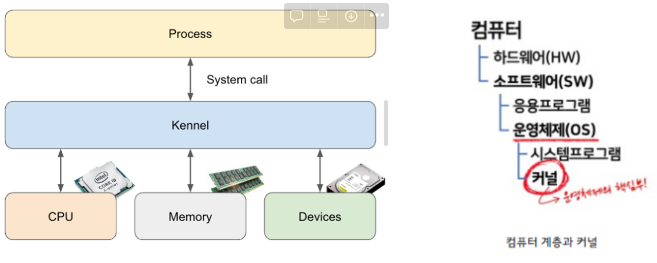
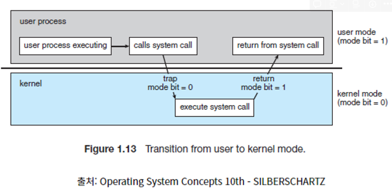
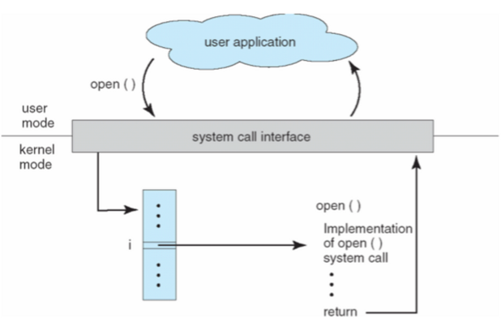
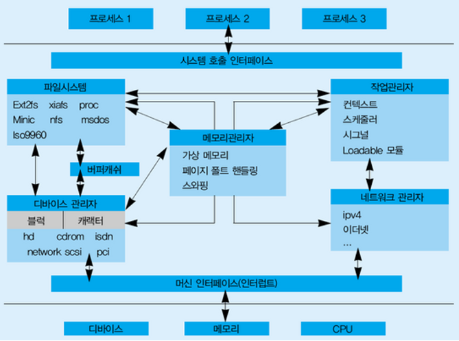
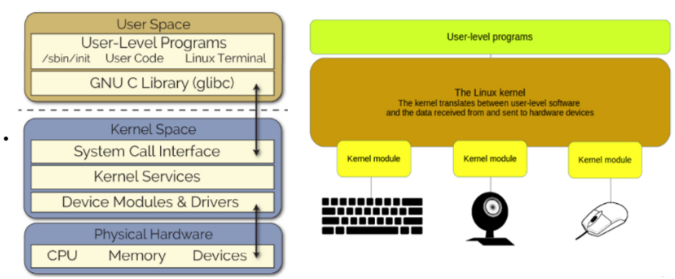

230417_리눅스커널_이승희
0. 커널을 공부하는 마음가짐
마음가짐
(출처 : 리눅스 커널(운영체제) 강의노트 [1])
리눅스 커널(Linux Kernel)을 한 사람이 전부 아는 것은 불가능하다. 커널 관련 두터운 원서를 75 ~ 80권 정도는 읽어야 “아, 한 번씩은 훑어봤다”라고 말할 수 있을 정도다. IBM과 같은 대형회사에서도 리눅스를 다루는 사람만 250명 정도가 있다고 한다. 250명의 사람이 방대한 커널에서 각자 분야를 맡아서 일을 처리한다. 따라서 “모든 걸 다 알아야지!”라는 마음가짐 보다는 “커널과 운영체제가 어떤 식으로 동작하는지 개략적으로 이해해보자”라는 수준의 마음가짐을 가지는 것이 좋겠다.
1. 리눅스 커널이란?
1-1. 개요 및 역사

개요
커널(kernel)은 운영체제 중 항상 메모리에 올라가 있는 운영체제의 핵심 부분으로써 하드웨어와 응용 프로그램 사이에서 인터페이스를 제공하는 역할을 하며 컴퓨터 자원들을 관리하는 역할을 합니다. 즉, 커널은 인터페이스로써 응용 프로그램 수행에 필요한 여러가지 서비스를 제공하고, 여러가지 하드웨어(CPU, 메모리) 등의 리소스를 관리하는 역할을 합니다.
다만 이러한 커널은 항상 컴퓨터 자원들을 바라만 보고 있기에 사용자와의 상호작용은 지원하지 않습니다. 따라서 사용자와의 직접적인 상호작용을 위해 프로그램을 제공하게 되는데, 대표적으로 쉘(Shell)이라는 명령어 해석기 등이 있습니다.
리눅스 커널은 유닉스 운영 체제를 모델로 하여 개발되었습니다. 이전에는 유닉스 운영 체제가 유료로 배포되었기 때문에 개인 사용자들이 자신의 컴퓨터에서 유닉스 운영 체제를 사용하기 어려웠습니다. 이에 대한 대안으로 개발된 것이 리눅스 커널이었습니다.
리눅스 커널은 무료 및 오픈 소스 소프트웨어로 배포되고 있어, 많은 사용자들이 이를 다양한 용도로 사용하고 있습니다. 또한 리눅스 커널은 다양한 하드웨어 플랫폼과 아키텍처에서 동작하도록 지원하고 있습니다.
→ 정리를 하면 ‘운영체제’는 커널과 함께 사용자 편의를 위한 시스템 프로그램을 포함하며, ‘커널’은 컴퓨터 자원을 관리하는 운영체제의 핵심 부분입다.
역사 (출처 : 나무위키)
1991년 당시 핀란드 헬싱키 공대 대학생이었던 리누스 토르발스가 미닉스 OS를 사용하는 컴퓨터에서 작업해서 만들었습니다.
미닉스를 쓰면서 마음에 안 드는 점이 있을 때마다 커널에 여러 가지 기능을 추가했고, 어느새 운영체제에 가까울 정도로 기능이 늘어났습니다.
리누스는 이 커널을 처음 릴리스 할 때, 무료이니 ‘Free’, Unix 와 유사하니 ‘x’를 조합해 ‘Freax’라고 부르길 원했다고 합니다. 그러나 FTP 서버에 소스 파일을 업로드해줬던 아리 렘케는 차라리 리누스가 개발했으니 ‘리눅스’라고 부르는 게 낫겠다 싶어 리누스의 허락 없이 이름을 ‘리눅스’로 바꿨고, 그 후에 리누스도 이 이름에 동의하 새 운영체제의 이름은 리눅스로 확정됐습니다. 나중에 리누스 토르발스는 BSD OS가 실패한 원인이 “이름에 쓸데없이 약자를 써서 그렇다.”라고 말한 적이 있다고 합니다.
또한 리눅스 커널의 마스코트인 Tux(턱스)는 래리 유윙이 1996년에 창조한 마스코트입니다.
왜 하필 펭귄이냐 하면 별다른 이유는 없고, 그저 개발자인 리누스 토르발스가 펭귄을 좋아해서라고 합니다. 때는 93년 경, 토르발스가 오스트레일리아 태즈메이니아를 여행하던 때, 토르발즈는 유닉스 모임에서 리눅스에 대해 말하려 가던 중에 엄청나게 작은 쇠푸른펭귄한테 물리게 됩니다. 그 일로 인해 토르발스가 펭귄을 좋아하게 되고 리눅스의 로고로 떠올리게 되었다고 합니.
2. 리눅스 커널의 구조
2-1. 시스템 콜(시스템 호출 인터페이스)
정의
시스템 호출(system call)은 운영 체제의 커널이 제공하는 서비스에 대해, 응용 프로그램의 요청에 따라 커널에 접근하기 위한 인터페이스 입니다. 사용자 프로그램은 시스템 호출(System Call)을 통해 커널에게 요청을 보내고, 커널은 해당 요청을 처리한 뒤 결과를 다시 사용자 프로그램에게 반환합니다.
보통 C나 C++과 같은 고급 언어로 작성된 프로그램들은 직접 시스템 호출을 사용할 수 없기 때문에 고급 API를 통해 시스템 호출에 접근하게 하는 방법입니다. 리눅스에서는 POSIX(Portable Operating System Interface) 시스템 콜 인터페이스를 사용하며, C 언어의 라이브러리 함수를 통해 해당 인터페이스를 호출할 수 있습니다.
시스템 콜은 왜 필요할까?

우리가 일반적으로 사용하는 프로그램은 ‘응용프로그램’입니다. 유저레벨의 프로그램은 유저레벨의 함수들 만으로는 많은 기능을 구현하기 힘들기 때문에, 커널(kernel)의 도움을 반드시 받아야 합니다. 이러한 작업은 응용프로그램으로 대표되는 유저 프로세스(User Process)에서 유저모드에서는 수행할 수 없습니다. 반드시 커널모드로 전환한 후에야, 해당 작업을 수행할 권한이 생깁니다. 커널 모드를 통한 이러한 작업은 반드시 시스템 콜을 통해 수행하도록 설계되어 있습니다.
권한은 왜 필요한 것일까?
그 이유는 해커가 피해를 입히기 위해 악의적으로 시스템 콜을 사용하는 경우나 초보 사용자가 하드웨어 명령어를 잘 몰라서 아무렇게 함수를 호출했을 경우에 시스템 전체를 망가뜨릴 수도 있기 때문입니다. 따라서 이러한 명령어들은 특별하게 커널 모드에서만 실행할 수 있도록 설계되었고, 만약 유저 모드에서 시스템 콜을 호출할 경우에는 운영체제에서 불법적인 접근이라 여기고 trap을 발생시킵니다.
예시 : open()의 호출

예를 들어, open() 함수를 사용하면 파일을 열고, read() 함수를 사용하면 파일을 읽을 수 있습니다. 이러한 함수 호출은 컴파일러에 의해 해당 함수가 시스템 호출로 번역되어 실행됩니다.
2-2. 커널의 주요 구성 요소 및 역할

이 중에서도 가장 중요한 기능은 운영 체제(OS)의 핵심 부분으로서 하드웨어와 소프트웨어 간의 인터페이스를 담당하는 것입니다. 다음은 리눅스 커널이 제공하는 주요 기능들입니다.
- 프로세스 관리: 프로세스를 관리& 스케줄링
프로세스(Process)는 실행 중인 프로그램을 의미하며, 운영 체제는 여러 개의 프로세스를 관리합니다. **프로세스 스케줄링은 CPU를 할당하고 프로세스 우선순위를 조절하는 등의 작업을 수행합니다.
- 메모리 관리: 시스템의 메모리 관리
- 운영 체제는 프로그램이
메모리를 사용할 수 있도록 메모리를 할당하고,메모리 사용량을 제어합니다. 이 구성 요소는 메모리 할당, 해제, 페이지 교체 등의 작업을 수행합니다.
- 운영 체제는 프로그램이
- 파일 시스템 관리
- 파일 시스템은 파일 및 디렉터리를 관리하는 역할을 수행합니다. 운영 체제는 파일 시스템을 통해 사용자가
파일을 생성, 삭제, 수정할 수 있도록 지원합니다.
- 파일 시스템은 파일 및 디렉터리를 관리하는 역할을 수행합니다. 운영 체제는 파일 시스템을 통해 사용자가
- 네트워크 관리: 네트워크 기능 지원
- 이는 네트워크
장치를 관리하고, 소켓 통신을 처리하는 등의 작업을 수행합니다.
- 이는 네트워크
- 디바이스 드라이버 관리: 하드웨어 장치 관리
- 이는
디바이스 드라이버를 로드하고, 장치를 제어하는 등의 작업을 수행합니다.
- 이는
- 보안 기능
- 이는
사용자 인증, 암호화, 접근 제어 등의 작업을 수행합니다.
- 이는
- 시스템 호출 지원
- 운영 체제의 커널에게 사용자 프로세스로부터 요청이 오면 그 요청을 처리하여
운영 체제와 상호작용할 수 있도록 하는역할을 수행합니다. 이는 시스템 콜 인터페이스(System Call Interface)를 통해 사용자 프로그램이 커널의 기능을 호출하는 방식으로 이루어집니다.
- 운영 체제의 커널에게 사용자 프로세스로부터 요청이 오면 그 요청을 처리하여
3. 리눅스 커널의 유형
3-1. 모놀리식 커널(Monolithic Kernel), 마이크로 커널(MicroKernel)
- 모놀리식 커널
- 정의 : 모놀리식 커널은 우리가
개념적으로 알고 있는 커널로써애플리케이션을 제외한 모든 System 서비스들, 예를들면 VFS(Virtual File System), IPC(InterProcess Communication), File System등을커널이 직접 처리하는 방식입니다. 각 서비스들은 커널 내부의 여러 계층에서 관리됩니다. 모놀리식 커널은 사용자가 운영체제 서비스들을 System Call을 통해 사용할 수 있게 해줍니다. - 단점 : 모놀리식 커널은 커널이 많은 것을 관리하기 때문에
커널의 크기가 크고, 하나의 오류가 전체 시스템에 영향을 끼칠 수 있습니다. - 장점 : 커널 내부에서 서비스들이
서로 시스템 자원을 공유하며 효율적으로 관리할 수 있고, 내부 서비스를 직접 커널이 수행하기에 빠른 처리속도를 가집니다. - 발전 : 초기 모놀리식 커널은 단일 모듈이었기에 내부 서비스의 추가, 수정에 있어서 커널 전체를 다시 컴파일 및 로딩이 필요했습니다. 다만 최신
모놀리식 커널은 여러개의 모듈로 구성되어있어서 커널의 추가, 수정이 수훨해졌습니다. - 예시 : 대표적인 모놀리식 커널에는 Unix, Embedded Linux, OSEK, WinMobile 등이 있다.
- 정의 : 모놀리식 커널은 우리가
- 마이크로 커널
- 정의 : 마이크로 커널은 기존의 모놀리식 커널에서
핵심 서비스(Process Management, Memory Management, Network Management 등)만을 남겨두고 나머지는 제외하여 **가볍게 만든 커널**입니다. 기존의 모놀리식 커널이 가지고 있던 시스템 서비들(VFS, IPC, Device Driver 등)을 마이크로 커널에서는 개별적인 서버의 형태로 존재합니다. 따라서프로세스간 통신을 통해 대부분의 서비스가 수행됩니다. - 단점 : 메시지 전송에 따른 컨텍스트 스위칭이 많이 발생하고,
시스템 복잡도가 증가 될 수록 시스템 부하, 오버헤드가 증가합니다. - 장점 :
서버를 추가하는 방식이기에 커널을 변경하지 않고 간단히 기능을 추가, 수정 할 수 있고, 프로세스가 각각의 서버 영역에서 수행되기 때문에 하나의 서비스가 다운되어도 다른 서비스까지 영향을 끼치지 않습니다. - 예시 : 가벼운 성질 때문에 임베디드 시스템등에 사용됩니다. 대표적인 마이크로 커널에는 MacOS, Winodws NT 등이 있다.
- 정의 : 마이크로 커널은 기존의 모놀리식 커널에서
3-2 리눅스 커널 모듈

- 앞서, 커널 모듈이 없다면?
- 우리는 모놀리식 커널(단일 커널)을 만들어야할 것이고 커널 이미지에 직접적으로 새로운 기능을 추가해야 합니다. 즉, 더 큰 커널을 사용하는 것 외에도
우리가 새로운 기능을 커널에 넣고 싶을 때마다 매번 빌드와 리부팅을 반복하는 번거로운 작업을 해야합니다. 이를 개선시켜 주는 것이 커널 모듈 입니다.
- 우리는 모놀리식 커널(단일 커널)을 만들어야할 것이고 커널 이미지에 직접적으로 새로운 기능을 추가해야 합니다. 즉, 더 큰 커널을 사용하는 것 외에도
- 리눅스의 커널 모듈 이란?
- 모듈은 요청 시 커널에 로드 및 언로드할 수 있는 코드 조각입니다.
- 시스템을 재부팅할 필요 없이 커널의 기능을 확장합니다.
- 예를 들어, 한 가지 유형의 모듈은 커널이 시스템에 연결된 하드웨어에 액세스할 수 있도록 하는 디바이스 드라이버입니다.
- 따라서 모듈을 이용하면 커널 컴파일 시간을 단축할 수 있습니다.
- 로드 가능한 커널 모듈(LKM, Loadable Kernel Module)은 런타임에 Linux 커널에 코드를 추가하거나 제거하는 메커니즘입니다.
- 모듈 없이 Linux 커널에 코드를 추가하려는 경우 가장 기본적인 방법은 커널 소스 트리에 일부 소스 코드 또는 파일을 추가하고 커널을 다시 컴파일하는 것입니다.
- 모듈을 사용하면 Linux 커널이 실행되는 동안 코드를 추가할 수 있습니다.
- 이러한 방식으로 추가하는 코드 덩어리를 로드 가능한 커널 모듈이라고 합니다.
- 모듈은 커널이 하드웨어와 통신할 수 있도록 하는 디바이스 드라이버에 이상적입니다.
- 모듈은 /lib/modules/ 디렉터리 에서 .ko(kernel object, 커널 개체) 확장자를 가진 파일로 나타낼 수 있습니다.
- 디바이스 드라이버는 모듈 형태로 구성되어 있습니다.
- 파일 시스템, 메모리 매니지먼트 또한 커널 형태로 구성할 수 있습니다.